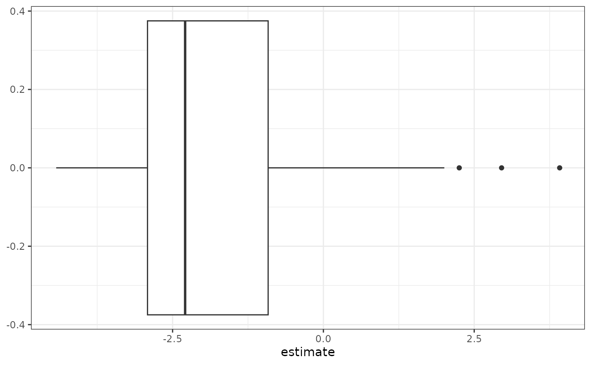

Using radEmu with a reference taxon
Sarah Teichman and Amy Willis
2025-03-14
Source:vignettes/radEmu_with_reference_taxon.Rmd
radEmu_with_reference_taxon.RmdFirst, we will install radEmu, if we haven’t
already.
# if (!require("remotes", quietly = TRUE))
# install.packages("remotes")
#
# remotes::install_github("statdivlab/radEmu")Next, we can load radEmu as well as the
tidyverse package suite.
Introduction
In this vignette, we will use radEmu with a reference
taxon as the identifiability constraint, instead of
radEmu’s default of using the “typical” log fold-difference
across taxa as the identifiability constraint. This is useful if you
have a specific taxon that you want to compare all other taxa to, or if
your experimental design includes a spiked-in synthetic taxon or
internal standard. In this vignette we will provide an example of
setting a reference taxon, and discuss how this changes the
interpretation of radEmu parameter estimates and test
results. This vignette assumes familiarity with the basic usage of
radEmu, and we suggest reviewing the “intro_radEmu.Rmd”
vignette before working through this vignette.
Loading and preparing data
We’ll use a dataset published by Wirbel et al. (2019), see “intro_radEmu.Rmd” for more information about this data.
We will now prepare this data to obtain our abundance table and
covariate data to use with emuFit. Again, see
“intro_radEmu.Rmd” for an explanation of each of the steps in the code
below.
wirbel_sample$Group <- factor(wirbel_sample$Group, levels = c("CTR","CRC"))
chosen_genera <- c("Eubacterium", "Faecalibacterium", "Fusobacterium", "Porphyromonas")
mOTU_name_df <- data.frame(name = mOTU_names) %>%
mutate(base_name = stringr::str_remove(mOTU_names, "unknown ") %>%
stringr::str_remove("uncultured ")) %>%
mutate(genus_name = stringr::word(base_name, 1))
restricted_mOTU_names <- mOTU_name_df %>%
filter(genus_name %in% chosen_genera) %>%
pull(name)
ch_study_obs <- which(wirbel_sample$Country %in% c("CHI"))
small_Y <- wirbel_otu[ch_study_obs, restricted_mOTU_names]
sum(rowSums(small_Y) == 0) # no samples have a count sum of 0
#> [1] 0
sum(colSums(small_Y) == 0) # one category has a count sum of 0
#> [1] 1
category_to_rm <- which(colSums(small_Y) == 0)
small_Y <- small_Y[, -category_to_rm]
sum(colSums(small_Y) == 0)
#> [1] 0Fitting a model
Now we will use the function emuFit() to fit our model.
We will start by fitting radEmu’s default model, which uses
the “typical” log fold-difference across taxa as the identifiability
constraint.
ch_fit_default <- emuFit(formula = ~ Group,
data = wirbel_sample[ch_study_obs, ],
Y = small_Y,
run_score_tests = FALSE) Let’s look at the first few estimates.
head(ch_fit_default$coef)
#> covariate category
#> 1 GroupCRC Fusobacterium nucleatum s. vincentii [ref_mOTU_v2_0754]
#> 2 GroupCRC Fusobacterium nucleatum s. animalis [ref_mOTU_v2_0776]
#> 3 GroupCRC Fusobacterium nucleatum s. nucleatum [ref_mOTU_v2_0777]
#> 4 GroupCRC Faecalibacterium prausnitzii [ref_mOTU_v2_1379]
#> 5 GroupCRC Eubacterium siraeum [ref_mOTU_v2_1387]
#> 6 GroupCRC Eubacterium sp. [ref_mOTU_v2_1395]
#> category_num estimate se lower upper score_stat pval
#> 1 1 1.48637864 0.8966329 -0.2709896 3.2437469 NA NA
#> 2 2 2.31317105 0.8271200 0.6920456 3.9342966 NA NA
#> 3 3 3.08640472 1.0275200 1.0725026 5.1003069 NA NA
#> 4 4 -0.34307573 0.3520406 -1.0330626 0.3469111 NA NA
#> 5 5 0.03892098 0.4780368 -0.8980140 0.9758559 NA NA
#> 6 6 1.12952354 0.9563470 -0.7448821 3.0039292 NA NAThe first taxon reported is F. nucleatum s. vincentii, and it has an “estimate” of . This means that the abundance of F. nucleatum s. vincentii is, on average, times greater in colorectal cancer cases compared to controls compared to the typical fold-difference of taxa in cases compared to controls.
Let’s look at the distribution of log fold-difference estimates.
ch_fit_default$coef %>% ggplot(aes(x = estimate)) + geom_boxplot() + theme_bw() 
We can see that the log fold-difference estimates in this analysis range from to . Furthermore, the median log fold-difference is , which is a consequence of the default identifability constraint… and why we need to add “compared to the typical fold-difference of taxa in cases compared to controls” in the above interpretation. (Yes, it’s annoying… but it’s necessary to avoid making stronger assumptions.)
Now, we will instead use a reference taxon to give
the identifiability constraint. Here’s two three scenarios
where this might be useful:
- You know that a taxon is not changing in average abundance across your comparison groups. Maybe you’ve looked at comparable datasets, or maybe you know this mechanistically given the system you’re studying. Either way, you know it.
- You spiked a taxon at equal abundance into your samples. So, you know it’s not changing in average abundance across your comparison groups. (This is just #1, but you made it happen. Go you!)
- You just want to compare the fold-differences in abundance to a specific taxon’s fold-difference in abundance, without assuming that this taxon is not different in average abundance.
Note: Setting 3 isn’t different from 1 or 2 in its code, but the interpretations of estimates and inference will be different – with the comparison looking more like the median-comparison, but now with a taxon-specific comparison.
Let’s suppose you’re in Setting 1 or 2, and that F. nucleatum s. animalis is that taxon.
ref_taxon <- which(stringr::str_detect(colnames(small_Y), "Fusobacterium nucleatum s. animalis"))
ref_taxon # the index of F. nucleatum s. animalis in our Y matrix
#> [1] 2To use that taxon index as the reference, just pass its column index
to constraint_fn:
ch_fit_ref <- emuFit(formula = ~ Group,
data = wirbel_sample[ch_study_obs, ],
Y = small_Y,
run_score_tests = FALSE,
constraint_fn = ref_taxon) Again, let’s look at the first few estimates.
head(ch_fit_ref$coef)
#> covariate category
#> 1 GroupCRC Fusobacterium nucleatum s. vincentii [ref_mOTU_v2_0754]
#> 2 GroupCRC Fusobacterium nucleatum s. animalis [ref_mOTU_v2_0776]
#> 3 GroupCRC Fusobacterium nucleatum s. nucleatum [ref_mOTU_v2_0777]
#> 4 GroupCRC Faecalibacterium prausnitzii [ref_mOTU_v2_1379]
#> 5 GroupCRC Eubacterium siraeum [ref_mOTU_v2_1387]
#> 6 GroupCRC Eubacterium sp. [ref_mOTU_v2_1395]
#> category_num estimate se lower upper score_stat pval
#> 1 1 -0.8267924 0.4581980 -1.724844 0.07125911 NA NA
#> 2 2 0.0000000 0.0000000 0.000000 0.00000000 NA NA
#> 3 3 0.7732337 0.6760617 -0.551823 2.09829032 NA NA
#> 4 4 -2.6562468 0.8743699 -4.369980 -0.94251329 NA NA
#> 5 5 -2.2742501 1.0331042 -4.299097 -0.24940312 NA NA
#> 6 6 -1.1836475 1.1805958 -3.497573 1.13027766 NA NAFirst, note that the estimate for F. nucleatum s. animalis is now , because we have set it as the reference taxon. Great. It did what it was told.
The estimate for F. nucleatum s. vincentii is . The interpretation of this estimate under Setting 1 or 2 is that the average abundance of F. nucleatum s. vincentii in cancer cases is times that of non-cancer controls. Alternatively, its average abundance is times greater in non-cancer controls compared to cases.
How did this work? Because we assumed/knew information about one taxon, we could “pin down” the location of all estimates. Cool!
If we were instead in Setting 3, our interpretation would be slightly different. In this setting, the fold-difference in average abundance of F. nucleatum s. vincentii in cancer cases compared to non-cancer controls is times the fold-difference in average abundance of F. nucleatum s. animalis in cases compared to controls.
Let’s look at the distribution of log fold-difference estimates.
ch_fit_ref$coef %>% ggplot(aes(x = estimate)) + geom_boxplot() + theme_bw() 
Here, we can see a distribution that has the same shape as the distribution of estimates when using the default constraint. This is because the result of changing the identifiability constraint is to shift all estimates up or down by the same value, where this value is determined by the constraint. In this plot, the log fold-difference estimates range from to , and the median log fold-difference is . This shows that while the majority of taxa have ratios of average abundances of cases to controls that are smaller than that of F. nucleatum s. animalis, there are some taxa that have larger ratios and are even more enriched in cases compared to controls than our chosen reference taxon.
Hypothesis testing
Finally, let’s test hypotheses about the taxon F. nucleatum s. vincentii using both identifiability constraints. First consider the default constraint. We will run a robust score test.
ch_test_default <- emuFit(formula = ~ Group,
data = wirbel_sample[ch_study_obs, ],
Y = small_Y,
fitted_model = ch_fit_default, # provide our previous fit
refit = FALSE, # avoid refitting model
# test the first taxon, F. nucleatum s. vincentii
test_kj = data.frame(j = 1,
# test the second column in the design matrix
# associated with the case/control covariate
k = 2)) Now let’s look at the results.
head(ch_test_default$coef)
#> covariate category
#> 1 GroupCRC Fusobacterium nucleatum s. vincentii [ref_mOTU_v2_0754]
#> 2 GroupCRC Fusobacterium nucleatum s. animalis [ref_mOTU_v2_0776]
#> 3 GroupCRC Fusobacterium nucleatum s. nucleatum [ref_mOTU_v2_0777]
#> 4 GroupCRC Faecalibacterium prausnitzii [ref_mOTU_v2_1379]
#> 5 GroupCRC Eubacterium siraeum [ref_mOTU_v2_1387]
#> 6 GroupCRC Eubacterium sp. [ref_mOTU_v2_1395]
#> category_num estimate se lower upper score_stat pval
#> 1 1 1.48637864 0.8966329 -0.2709896 3.2437469 4.245038 0.0393652
#> 2 2 2.31317105 0.8271200 0.6920456 3.9342966 NA NA
#> 3 3 3.08640472 1.0275200 1.0725026 5.1003069 NA NA
#> 4 4 -0.34307573 0.3520406 -1.0330626 0.3469111 NA NA
#> 5 5 0.03892098 0.4780368 -0.8980140 0.9758559 NA NA
#> 6 6 1.12952354 0.9563470 -0.7448821 3.0039292 NA NAWe have a p-value of . This means that with an alpha level of , we reject the null hypothesis that the expected log fold-difference in abundance of F. nucleatum s. vincentii in cases compared to controls is equal to the typical log fold-difference in abundance of cases to controls across all taxa in the analysis. We conclude that F. nucleatum s. vincentii is enriched in cases compared to controls, relative to the typical taxon in the analysis.
Now, instead consider a test using our reference taxon constraint.
ch_test_ref <- emuFit(formula = ~ Group,
data = wirbel_sample[ch_study_obs, ],
Y = small_Y,
constraint_fn = ref_taxon,
fitted_model = ch_fit_ref, # provide our previous fit
refit = FALSE, # avoid refitting model
# test the first taxon, F. nucleatum s. vincentii
test_kj = data.frame(j = 1,
# test the second column in the design matrix
# associated with the case/control covariate
k = 2)) Now let’s look at the results.
head(ch_test_ref$coef)
#> covariate category
#> 1 GroupCRC Fusobacterium nucleatum s. vincentii [ref_mOTU_v2_0754]
#> 2 GroupCRC Fusobacterium nucleatum s. animalis [ref_mOTU_v2_0776]
#> 3 GroupCRC Fusobacterium nucleatum s. nucleatum [ref_mOTU_v2_0777]
#> 4 GroupCRC Faecalibacterium prausnitzii [ref_mOTU_v2_1379]
#> 5 GroupCRC Eubacterium siraeum [ref_mOTU_v2_1387]
#> 6 GroupCRC Eubacterium sp. [ref_mOTU_v2_1395]
#> category_num estimate se lower upper score_stat pval
#> 1 1 -0.8267924 0.4581980 -1.724844 0.07125911 1.109799 0.2921257
#> 2 2 0.0000000 0.0000000 0.000000 0.00000000 NA NA
#> 3 3 0.7732337 0.6760617 -0.551823 2.09829032 NA NA
#> 4 4 -2.6562468 0.8743699 -4.369980 -0.94251329 NA NA
#> 5 5 -2.2742501 1.0331042 -4.299097 -0.24940312 NA NA
#> 6 6 -1.1836475 1.1805958 -3.497573 1.13027766 NA NAHere, the p-value is . Therefore, we fail to reject the null hypothesis that the expected log fold-difference in the abundance of F. nucleatum s. vincentii in cases compared to controls is equal to the expected log fold-difference in the abundance of F. nucleatum s. animalis in cases compared to controls. We do not have sufficient evidence to support the conclusion that F. nucleatum s. vincentii and F. nucleatum s. animalis have significantly different fold-differences in abundances of cases compared to controls.
Important: These hypothesis tests are testing different hypotheses!!! So, they should give different results. Phew.
Note that while this example uses a model with a single categorical covariate, you can follow the same approach with multiple covariates as well as cluster-correlated (e.g. longitudinal) data. Don’t forget that your parameter interpretations change when you adjust for multiple covariates!
We hope you found this example helpful!! If you have any questions, feel free to post an issue to let us know!